Hello Bob
This is a first look at the new Monga Alpacas website. Please have a look around and tell Will what you think.
It is only a preview. The real website has not changed, and nobody will find this one unless they are given the link.
There are some questions for you at the bottom of this page.
What is new
- A clearer front page. Breeders and people wanting a few pets now each have their own section.
- Your stud males are listed, with the Khan family tree: Titan, Khan, then Mustang, Channing and Chalina.
- The show record. The main championships from 2013 to 2026 are listed, and each one links to the official show report.
- Your articles have their own page, grouped by subject, and open on the website in larger, easier print. Your words have not been changed. Each one has a short summary at the top, written by Will’s helper, so please check those. There is also a tidy printable copy of each article with a Monga Alpacas heading.
- A density calculator in your “objective method” article. It does the same sum as your spreadsheet.
- A photo gallery with 39 photos, using the larger originals where you had them.
- A map showing where the farm is between Canberra and the coast.
- It all works on a phone or iPad as well as the computer.
How to send Will your comments
Short notes are perfect. No need for full sentences, capitals or full stops.
A few key words is enough. Will can work out the rest.
You cannot break anything by clicking around.
First, the Comments switch
At the very top of every page there is a red strip with a switch marked Comments.
- Off (the normal setting): you see the website as visitors will see it, with nothing extra.
- On: small red labels (H1, H2 …) appear on each part of the page, and a red Email Will about this button appears at the bottom right.
Click the switch once to turn it on, and once more to turn it off. The computer remembers your choice.
The easy way: the red button
- Turn the Comments switch on.
- Go to the part of the website you want to talk about.
- Click the red button at the bottom right of the screen: Email Will about this
- An email opens with the page and part already filled in.
- Type your comment under My comment, then press Send.
Or write an email in Outlook
Send it to will.is@outlook.com. With Comments switched on, each part of the website has a small red label, such as H5. Put that label at the start of your note and say what to change.
H5 Khan also won in 2016
H9 phone number wrong
H3 change friendly to quiet
G2 helicopter was 2019 fires
CV article summary not right
all good
For an article, just give a word or two from its title, like “nutrition article” or “CV article”.
If it is easier, ring Will instead.
The labels for each part
The same red labels appear on the website itself, in the top left corner of each part, when the Comments switch is on. H is the home page, A is the articles page and G is the gallery.
Top of the home page
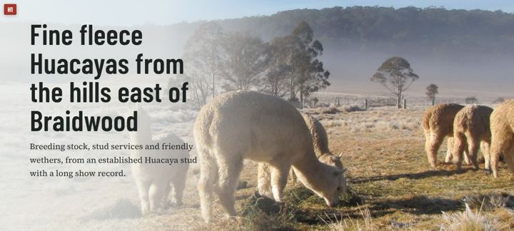
The Monga Mist strip
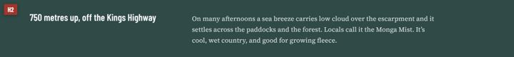
For breeders / For your paddock
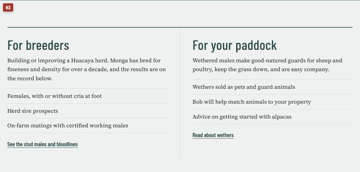
Three generations (stud males)
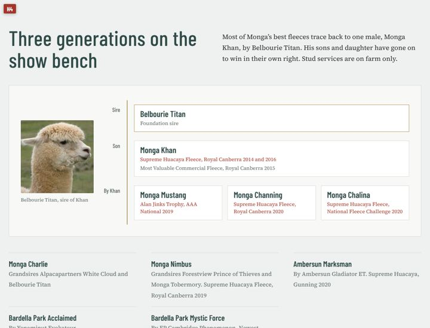
The show record
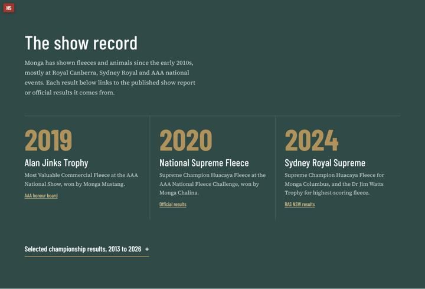
Wethers
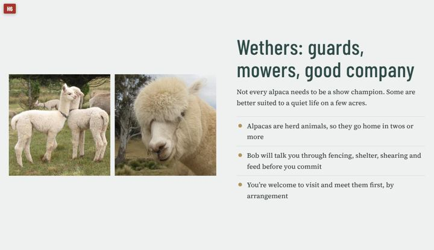
Bob Kingwell and his articles
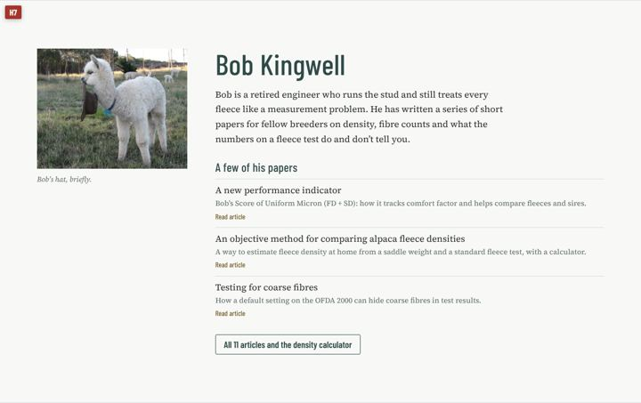
Around the farm (photos)
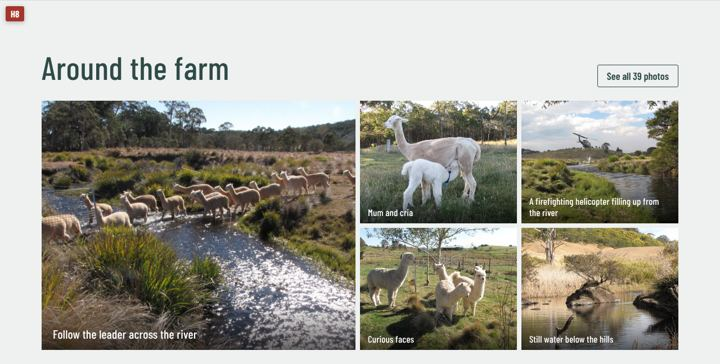
Contact and map
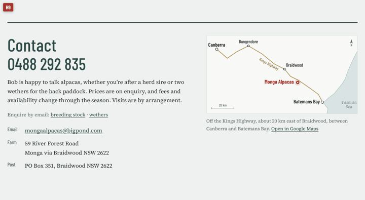
Articles page, top
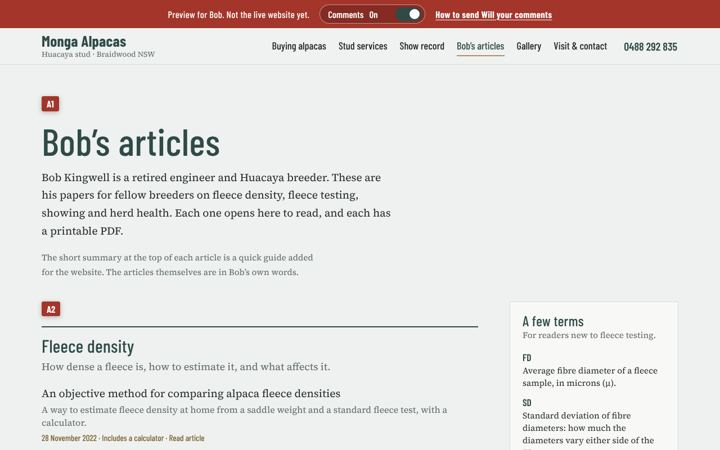
Articles page, list of articles
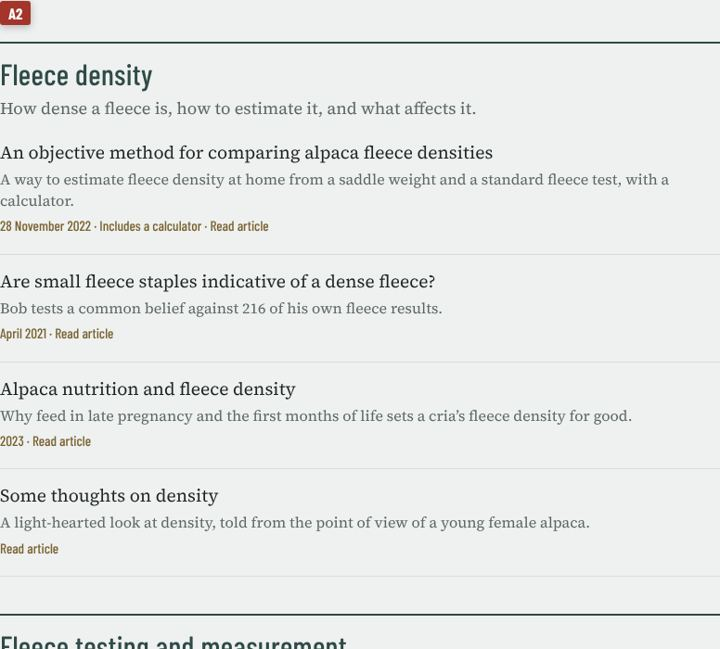
Gallery page, top
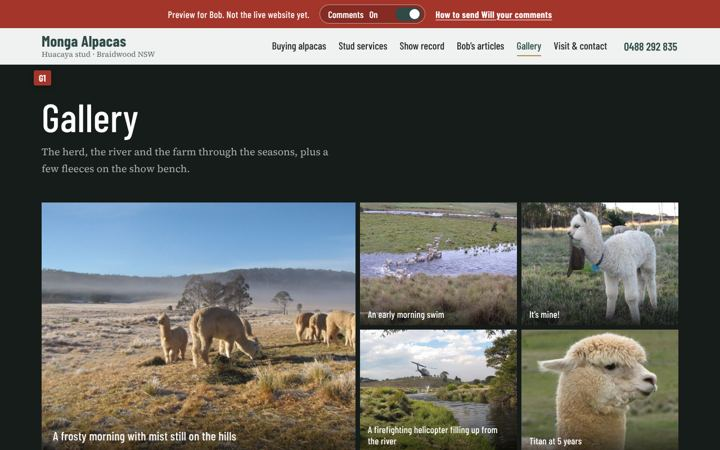
Gallery page, all photos
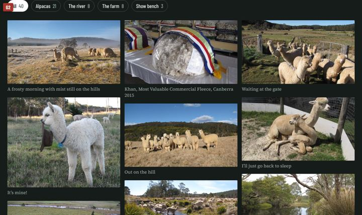
An article open on the screen
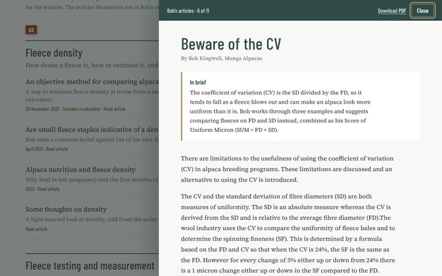
Questions for Bob
Answer as many as you like, in any order, a few at a time. Just put the question number first, for example:
Q1 about 150
Q5 yes Mystic Force since last year
Q11 don’t know
About the herd
- Q1 How many alpacas do you have now? Roughly how many females, males and wethers?
- Q2 What is the most you have had, and about when?
- Q3 Are the alpacas registered with the Australian Alpaca Association?
- Q4 Is the herd in Q-Alpaca or Alpaca MAP, or another health program?
The stud males (H4)
- Q5 Is the list of working males right? Is Bardella Park Mystic Force being used?
- Q6 Is the head photo labelled “Belbourie Titan, sire of Khan” really Titan?
- Q7 Do you have recent fleece test results for the working males (micron and SD)?
Fleece records
- Q8 Do you have the herd’s average micron and SD for each year? Will would like to show how the herd has improved over time.
Selling alpacas (H3 and H6)
- Q9 Can the website say wethers are usually available, or should it just say “ask Bob”?
- Q10 What is available at the moment, if anything?
The farm
- Q11 Roughly how big is the farm?
- Q12 What is the name of the river that runs through it?
- Q13 The helicopter photo: which fire, and what year?
Checking the writing
- Q14 Are the short summaries at the top of your articles right?
- Q15 Your originals have two small typing slips (“Adjusted Weigh” and “a12 months”). Fix them, or leave them?
- Q16 The health program article is from about 2007. Keep it as it is, add a note, or take it off?
- Q17 Are the farm address, phone number and email right (H9)?
- Q18 Do you know of any show results that are not on the list (H5)?
And anything else that is wrong, missing, or you don’t like.
Thank you, Bob.